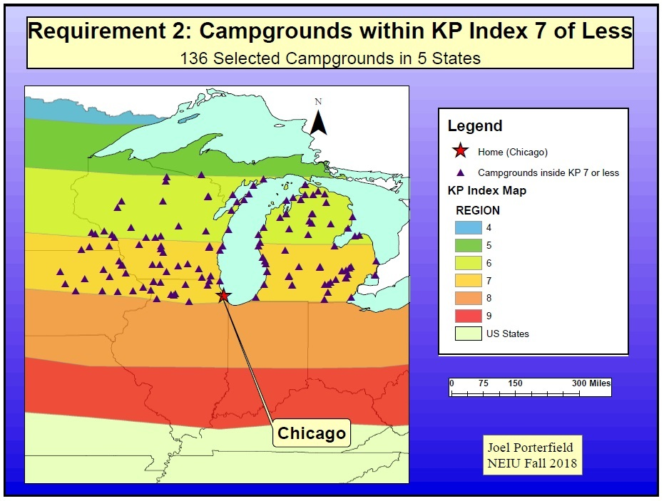

About Me
My path to finding GIS first started with a childhood interest in maps that was expanded by my discovery of the subject of geography my first year at college. After seeing the urban vibrancy of Barcelona during a winter break trip, I became interested in the development and life-cycles of cities. I also came to see the importance of our connection with the environment after living among the amazing nature on the Mediterranean island of Mallorca.
These experiences have developed my fascination with the interaction between cities and nature and how they fit together. As I am passionate about doing good for the Earth, I believe in making our cities more liveable for their inhabitants by pursuing more sustainable connections with our planet.
This connection I try to play out every day in my personal life. I am a doer and a creator. You will find me outside and doing something every month of the year with my hobbies: biking, camping, sailing, cross-country skiing, hiking. And when I am not doing one of those, I am creating, whether it be cooking in the kitchen, gardening in my yard, photographing around the city, or making maps using GIS.
GIS is at the crossroads of all of my interests and passions: the city, nature, and creating something. I love the visual aspect of maps and the stories that they tell. I hope to be able to make a difference in the world through the use of GIS, and I look forward to being able to bring all of my interests together in my career!
Resume
GIS coursework completed
GIS I: Vector GIS, Joins and relates, Geo-coding, General map-making (Chloroplethic, dot density, graduated symbols)
GIS II: Raster GIS, Spatial Analysis, Overlays, Density mapping, DEMs, Interpolation
GIS for Urban Systems: Network analysis, Accessibility analysis; Research and data collection for urban mapping projects
GIS III: Geodatabases, Python, Model Builder, QGIS
Computer Cartography (audited): ArcMap to Adobe Illustrator, Projections, Cartographic principles
Remote Sensing and Digital Image Processing: Erdas Imagine, LiDAR, Satellite image processing, change detection, supervised and unsupervised classification
Education |
Northeastern Illinois University GIS Masters Certificate |
|
Northeastern Illinois University M.A. Geography and Environmental Studies |
|
|
University of Illinois Urbana-Champaign Continuing education masters courses |
|
|
National Louis University MAT Seconday Education |
|
|
University of Illinois Urbana-Champaign BA Germanic Languages |
|
Skills |
|
Experience |
Maine Township High School District 207, Park Ridge, IL Spanish Teacher Aug 2017-May 2019 |
|
The Talking Farm, Skokie, IL Urban Agriculture Intern June 2018-Aug 2018 |
|
|
O.A. Thorp Academy; Chicago Public Schools K-8 Spanish Teacher Aug 2015-June 2017 |
|
|
Kaplan International Centers, Chicago, IL Adult ESL Teacher (English as a Second Language) Sep 2012-Aug 2015 |
|
|
Col·legi La Salle Palma, Palma de Mallorca, Spain English Teaching Assistant in Spain Oct 2008-June 2012 |
|
Portfolio


{kind=link}
![ GIS I Midwest Campgrounds for Viewing Aurora Borealis This was my first major project using GIS. My goal was to complete a Multi-criteria Evaluation of Midwest campgrounds that had the best characteristics for viewing the Northern Lights, as this is something I would like to photograph. For this project I used point shapefiles of upper Midwest campgrounds, however, I could not find already-made shapefiles for Wisconsin and Iowa. For these states I had to geocode manually the geographic coordinates of each of the state parks with campgrounds in order to be able to do my analysis. I also hand-drew the KP-Index polygons by tracing over a JPG file I found of the index from NOAA and then selecting only campgrounds that were within the areas with higher probability of seeing the Aurora. I wanted only campgrounds which were in dark areas, so I then compared remaining campgrounds with at dark sky map and created a coding system in the attribute table to mark the light pollution index of each campground. Finally, I coded campgrounds based on proximity to water and updated the attribute table. For the final analysis I selected campgrounds by attribute and ranked the top 10 based on the criteria.](img/portfolio/aurora.jpg){kind=link}
Interests
Photography
One of my main free-time activities is Photography. It originally started as a way to document my travels, but after taking a few classes I now work more from an artistic viewpoint.
I especially enjoy caputuring the contrast between the urban and natural worlds. I think this is a reflection of my comfort and enjoyment being in both environments.
My photos have won various local and international awards including a 1st Place in the "Cities and Nature" category of the Nature Conservancy 2017 competition and a 2nd Place in the "Greening the City" category of the International Garden Photographer of the Year 2018 competition.
See some of my work at the link below:
PhotographyTravel
I enjoy traveling and learning languages, and spent four years living in Europe.
- 1 Year studying in Vienna, Austria
- 3 years living and working in Palma de Mallorca, Spain
I speak Spanish, Catalan, and German fluently from my time abroad and have also spent time learning Dutch, Swedish, and French.
Outdoors
Most days I would rather be outside than in and have many hobbies which get me outdoors. I am an avid user of my bicycle, both for in-city transportation and commuting as well as for longer day or overnight trips.
In summer I get out on Lake Michigan sailing or kayaking, and in winter I enjoy taking advantage of the snow to do exploring on cross-country skis.
Additionally, my photography is often a catalyst for seeking out the every-changing variences in Chicago's weather conditions, and I have developed a strong working knowledge of local weather patterns, which I put to good use planning all of my activities.
Volunteer Work
Volunteering is a way that I can explore various interests while helping improve the community in Chicago. The following are a snapshot of the activities I participate or have participated in:
- Chicago Park District: I am a natrual areas steward at Ronan Park along the North Branch of the Chicago River and help lead restoration workdays once a month.
- Chicago Greeters: I lead tours of downtown and different neighborhoods with the Chicago Greeter program, which is a free service for visitors to the city. Normally I lead tours for Spanish, Catalan, and German speking visitors.
- Old Town School of Folk Music: I usher for concerts at the school in Lincoln Square. This started because of my interest in playing banjo and in bluegrass and American folk music. I enjoy helping out at the school and hearing the music.
Friends of the Chicago River
Let's Get In Touch!
I would love to hear from you about opportunities in GIS or photography! Use the links below to contact me.